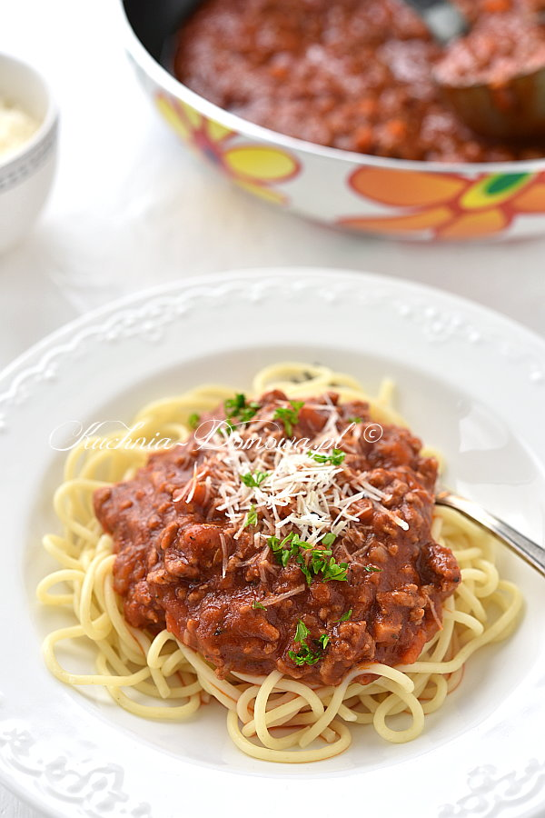

Spaghetti Bolognese recipe
Ingredients:
- 300 g mięsa mielonego
- 1 cebula
- 2 ząbki czosnku
- 1 marchewka
- 2 łyżki oleju
- 1 puszka krojonych pomidorów bez skórki lub pulpy pomidorowej (puszka 400g)
- 3 łyżki przecieru pomidorowego
- 100 ml bulionu mięsnego lub warzywnego
- 2 łyżeczki suszonego oregano
- sól, pieprz
- 300 g makaronu Spaghetti
- świeżo starty parmezan do posypania
Steps:
- Cebulę i czosnek obrać i poszatkować.
- Marchewkę umyć, obrać i pokroić w drobną kostkę
- Cebulę i czosnek chwilkę podsmażyć na oleju. Dodać mięso mielone i marchewkę. Wszystko razem chwilę podsmażyć, aż mięso straci kolor różowy. Dodać pomidory z puszki (razem z sosem z puszki), przecier pomidorowy i bulion. Całość dusić pod przykryciem na niskiej mocy palnika ok. 20 minut. Przyprawić solą, pieprzem i oregano.
- Spaghetti ugotować w osolonej wodzie według przepisu na opakowaniu. Odcedzić na durszlaku. (Nie przelewać zimną wodą).
- Spaghetti rozłożyć na talerzach. Polać sosem z mięsem i posypać parmezanem.
STRONA GŁÓWNA